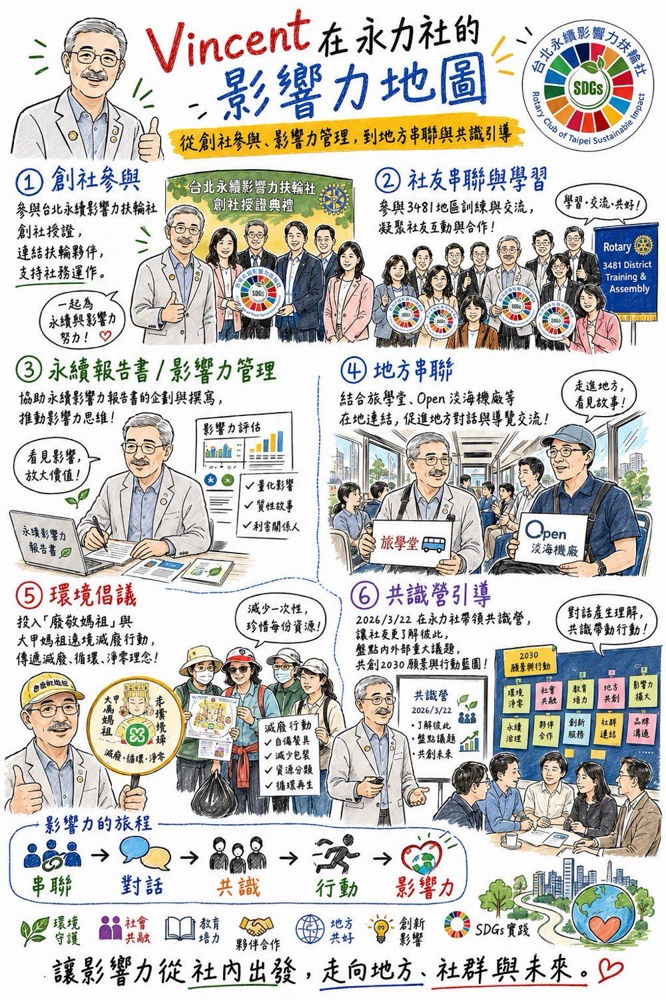

In 1994, he briefly joined a Rotary club. A year later he left, for a simple reason: the demands on his time and finances were too heavy. For the next thirty years, he was largely disconnected from the Rotary system.
That changed when CP Impact invited him to join the Rotary Club of Taipei Sustainable Impact. He admits that, had it not been a club with this kind of theme, he would never have returned to Rotary. If it were only about fellowship, he would have no interest.
Two words: sustainability and impact.
These have been the core questions he has devoted himself to over the past decade and more.
He did not throw himself in fully from the start. In the first year, he deliberately kept his distance and observed.
He was watching to see whether this club was genuinely different.
Traditional Rotary culture placed emphasis on attendance rates, donation figures, and ceremonial formality. The Club, by contrast, holds two meetings a month, only one of them in person, lowering the burden of time and money so that working professionals can take part in a balanced way.
More importantly, most of the participating members had already been practicing in the fields of sustainability and impact for many years. This showed him the possibilities.
When CP proposed writing a sustainability impact report dedicated to the Club, the idea aligned closely with the direction of his master's thesis research. He agreed to serve as lead writer.
He believes that to change Rotary culture, one must produce results that can be demonstrated.
He has long observed one regret in Rotary culture:
Most charitable activities disclose only how many resources were put in (Input), and rarely ask what was changed (Outcome) or what long-term impact was created (Impact).
If one looks only at the surface culture of donation amounts, it easily becomes a marker of status rather than social transformation.
He hopes the Club can become a model, showing other clubs that Rotary can begin to talk about impact management.
If one day the Club could inspire other clubs to publish their own sustainability reports, that would be the second tier of expanded impact he looks forward to.
At the Chao-Pang Cultural and Educational Foundation, he has served as a facilitator for more than ten years. Those he has served include:
Through ICA / ToP facilitation techniques, dialogue design, and strategic consensus retreats, he helps organizations face conflict, clarify their vision, and build consensus.
His greatest sense of accomplishment comes not from lecturing, but from seeing organizations change through dialogue.
Later, he went on to study SROI (Social Return on Investment), with a clear purpose: to make impact quantifiable and visible.
Going further still, he devoted himself to promoting the SDGs Game, serving as a reviewer of ESG sustainability reports, and leading impact management projects, presenting the complete chain from "using dialogue to drive change" to "expanding impact."
He gradually formed a core methodology:
Dialogue → Action → Indicators → Impact Disclosure
And the Club is the field in which he experiments with this methodology.
He modestly considers his contribution to the Club to be small, yet the most pivotal of all is precisely building the report.
He did not want it to be merely an attractive promotional brochure, but a document that serves as a model.
He personally interviewed members, organized the ESG actions within their vocational service, and distilled them into an Input-Activity-Output-Outcome structure, transforming scattered acts of goodwill into a comprehensible chain of impact.
He knows that without institutions, everything reverts to mere formality.
Community Sustainability Support Project: Co-Creating Local ESG Action →
For this reason, he took the initiative to propose holding an internal dialogue workshop on March 22. He believes that without mutual understanding and a shared vision, a club cannot be sustainable.
For him, sustainability is not a slogan.
Sustainability is: allowing the good of the present to be maintained, and even improved.
And this "good" cannot be pursued endlessly through economic growth alone. It must give equal weight to the shared good of the environment and society.
He admires the concept of spiritual environmentalism promoted by Dharma Drum Mountain, believing that true sustainability is restraint, not expansion.
Impact is doing all one can to make good things happen and be seen.
If one inadvertently causes negative impact, one must have the courage to correct it.
This capacity for reflection is also part of impact.
He admits that if, in the future, taking on responsibility becomes necessary for the sake of succession or expanding impact, he would not rule out changing his mind and assuming an important role.
In his view, since Rotary holds influence in society, it should not be merely a club for feeling good about itself. It should become a starting point for driving change.
Vincent's role is not that of the person standing at center stage, but of the one who designs the stage.
He transforms impact from an abstract ideal into a framework that can be measured, discussed, and demonstrated.
He believes that someone must take the lead in turning ideals into institutions.
If one day the Club can influence the entire Rotary system, then the report and the culture of dialogue he has laid down behind the scenes will be the key foundation.
He did not join Rotary for reputation or fellowship.
He joined to make the word "impact" truly happen.